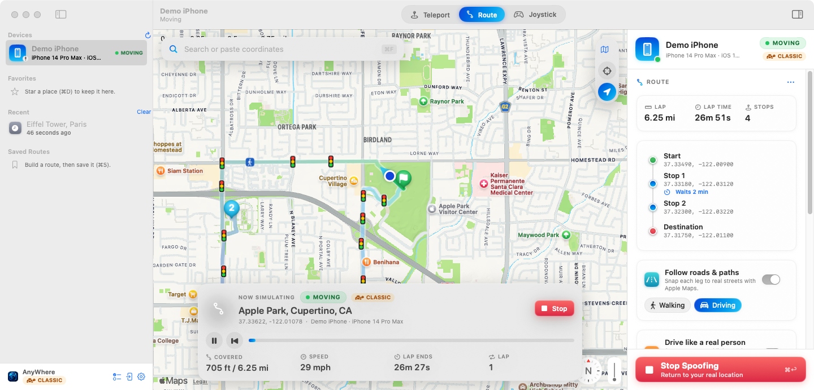
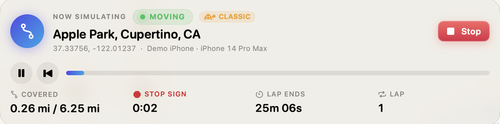
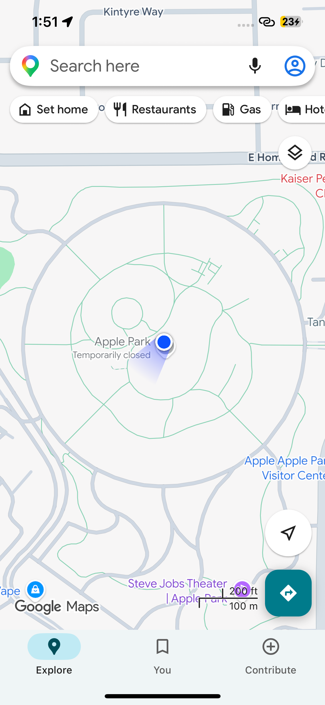
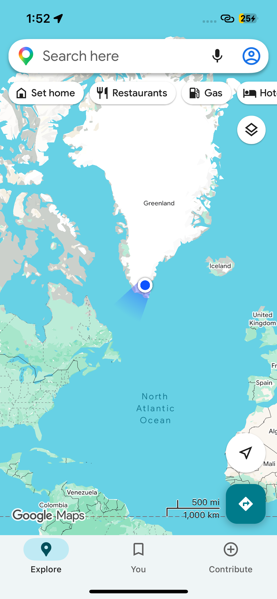
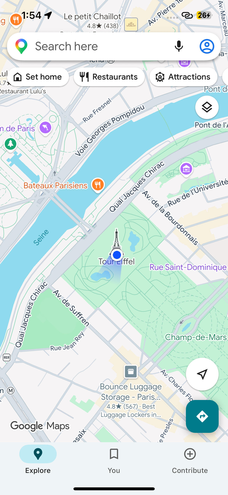

macOS 14+ · iPhone iOS 17+ · reversible
Put your iPhone anywhere. Then make it drive there for real.
A Mac app that changes your iPhone's GPS using Apple's own developer location tools. Jump to any spot in the world, or drive a route on real roads that stops at red lights and keeps to the speed limit. Your real location comes back the moment you press Stop.
curl -fsSL https://raw.githubusercontent.com/renyifan2009-hash/iOS-GPS-Spoofer-V1.1.1/main/install.sh | bash
Nothing is installed on the iPhone. It talks to your Mac over the cable.

The realism engine
It doesn't teleport. It drives.
Most location tools jump the blue dot in a straight line at a constant speed — which is exactly what nothing in the real world does. This one plays the stream of positions the way a real person moves, from map data for the roads you're on.
Stops at red lights
About half the lights are red, with a wait that's whatever's left of the red — and sometimes a short queue of cars ahead of you.
Stop & yield signs
Comes to a full stop about half the time, rolls through the rest, and slows at give-way signs — only for the ones that face your direction.
Keeps to the speed limit
Each road's real limit comes from OpenStreetMap. Your chosen speed is the cap; a residential street still slows you to 25.
Slows for turns & speed bumps
Brakes into corners by their real radius, eases over humps and tables, then accelerates back up — no instant stops, no teleporting.
Waits where you tell it
Pause five minutes at Stop 1, an hour at the office. On long drives it even takes a break every couple of hours.

How it works
Three steps, about ten minutes.
There's no App Store download and nothing to jailbreak. The app builds on your Mac and talks to the iPhone over Apple's developer channel — the same one Xcode uses.
STEP 01
Install on your Mac
Paste one line into Terminal. It downloads the app, builds it, and drops it in your Applications folder. Run curl … | bash and wait for Done!
STEP 02
Plug in your iPhone
Connect it with the cable and tap Trust. Turn on Developer Mode when the app asks. Nothing is installed on the phone itself.
STEP 03
Teleport or drive
Search a place and jump there, build a multi-stop route on real roads, or steer live with the joystick. Press Stop to return home.
On the iPhone
Every app believes it. Here's Maps.
The simulated location is the one iOS reports system-wide — so Maps, Weather, Find My and the rest all show the spot you picked, with no sign of a Mac anywhere.



Straight answers
Reversible by design.
Nothing is patched
It uses Apple's developer location simulation, not a jailbreak or a hack. Stop the app, quit it, or restart the phone and the real GPS is instantly back.
The phone stays clean
No profile, no sideloaded app, no certificate to trust. The Mac does the work over the cable, so there's nothing to uninstall from the iPhone afterward.
Use it on things you own
While a fake location is on, everyone you share location with sees it too. Some apps can detect simulated GPS and may limit the account — so keep it to your own devices and testing.
Built for testing & control
Check that your app's geofences fire in Tokyo without flying there, demo a location feature, or simply decide what location you hand to an app. Routes make the test look like a real trip.
FAQ
Questions, answered.
Is this a jailbreak or a hack?
Does my iPhone have to stay connected to the Mac?
Will every app really see the new location?
Can apps tell the location is simulated?
What do I need to run it?
How much does it cost?
Get it
Open Terminal. Paste one line. Drive to Paris.
Free and open source. It builds from source on your Mac — no account, no sign-in.
curl -fsSL https://raw.githubusercontent.com/renyifan2009-hash/iOS-GPS-Spoofer-V1.1.1/main/install.sh | bash
REQUIRES macOS 14 SONOMA+ · IPHONE OR IPAD ON iOS 17+ · A USB DATA CABLE